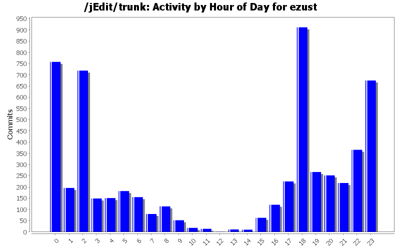
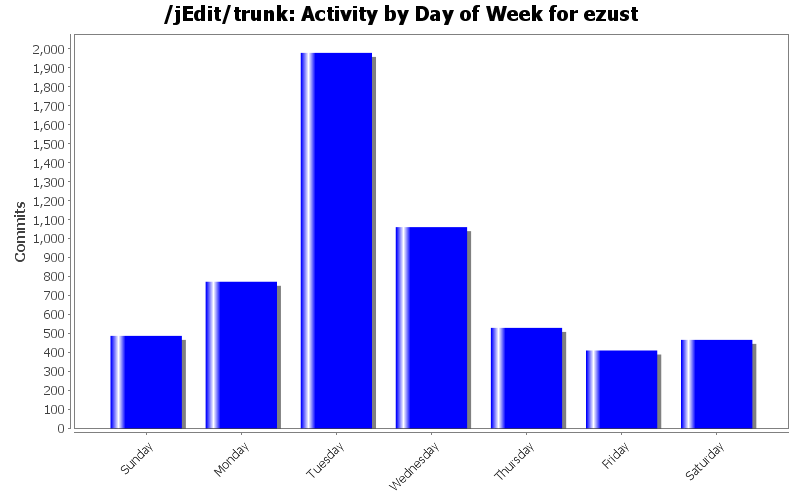
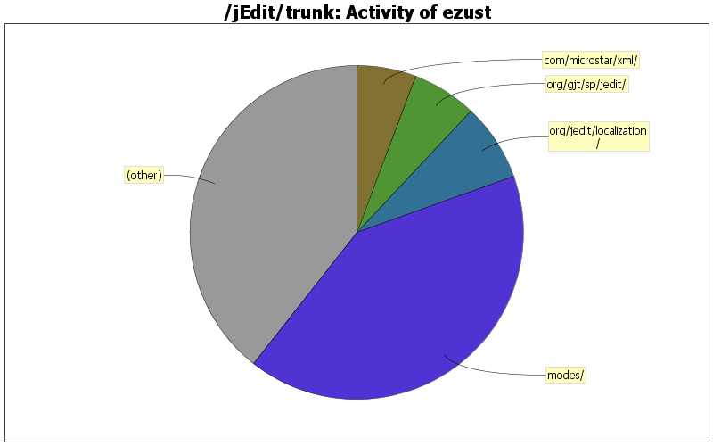

| Directory | Changes | Lines of Code | Lines per Change |
|---|---|---|---|
| Totals | 5709 (100.0%) | 84700 (100.0%) | 14.8 |
| modes/ | 515 (9.0%) | 34808 (41.1%) | 67.5 |
| org/jedit/localization/ | 83 (1.5%) | 6308 (7.4%) | 76.0 |
| org/gjt/sp/jedit/ | 741 (13.0%) | 5326 (6.3%) | 7.1 |
| com/microstar/xml/ | 31 (0.5%) | 4912 (5.8%) | 158.4 |
| doc/users-guide/ | 367 (6.4%) | 3528 (4.2%) | 9.6 |
| org/gjt/sp/jedit/options/ | 224 (3.9%) | 2899 (3.4%) | 12.9 |
| doc/ | 528 (9.2%) | 2531 (3.0%) | 4.7 |
| org/gjt/sp/jedit/gui/ | 403 (7.1%) | 2377 (2.8%) | 5.8 |
| org/gjt/sp/jedit/textarea/ | 257 (4.5%) | 1538 (1.8%) | 5.9 |
| keymaps/ | 28 (0.5%) | 1403 (1.7%) | 50.1 |
| doc/FAQ/ | 112 (2.0%) | 1390 (1.6%) | 12.4 |
| org/jedit/options/ | 25 (0.4%) | 1261 (1.5%) | 50.4 |
| org/gjt/sp/jedit/help/ | 72 (1.3%) | 1252 (1.5%) | 17.3 |
| com/loomcom/ant/tasks/jarbundler/ | 6 (0.1%) | 1242 (1.5%) | 207.0 |
| build-support/ | 24 (0.4%) | 1199 (1.4%) | 49.9 |
| org/gjt/sp/jedit/pluginmgr/ | 100 (1.8%) | 1188 (1.4%) | 11.8 |
| macros/Emacs/ | 26 (0.5%) | 1171 (1.4%) | 45.0 |
| misc/clojure/ | 4 (0.1%) | 1132 (1.3%) | 283.0 |
| org/gjt/sp/jedit/browser/ | 121 (2.1%) | 1049 (1.2%) | 8.6 |
| doc/news43/ | 17 (0.3%) | 761 (0.9%) | 44.7 |
| / | 102 (1.8%) | 737 (0.9%) | 7.2 |
| org/gjt/sp/jedit/io/ | 80 (1.4%) | 715 (0.8%) | 8.9 |
| macros/Editing/ | 16 (0.3%) | 588 (0.7%) | 36.7 |
| macros/C/ | 17 (0.3%) | 436 (0.5%) | 25.6 |
| org/gjt/sp/util/ | 84 (1.5%) | 423 (0.5%) | 5.0 |
| org/jedit/keymap/ | 11 (0.2%) | 410 (0.5%) | 37.2 |
| doc/news44/ | 8 (0.1%) | 398 (0.5%) | 49.7 |
| org/gjt/sp/jedit/msg/ | 81 (1.4%) | 382 (0.5%) | 4.7 |
| org/gjt/sp/jedit/bufferio/ | 37 (0.6%) | 359 (0.4%) | 9.7 |
| jars/QuickNotepad/ | 32 (0.6%) | 326 (0.4%) | 10.1 |
| org/gjt/sp/jedit/search/ | 88 (1.5%) | 305 (0.4%) | 3.4 |
| macros/Misc/ | 26 (0.5%) | 244 (0.3%) | 9.3 |
| installer/ | 60 (1.1%) | 190 (0.2%) | 3.1 |
| org/gjt/sp/jedit/syntax/ | 54 (0.9%) | 179 (0.2%) | 3.3 |
| org/gjt/sp/jedit/buffer/ | 62 (1.1%) | 141 (0.2%) | 2.2 |
| org/jedit/migration/ | 7 (0.1%) | 138 (0.2%) | 19.7 |
| org/jedit/core/ | 15 (0.3%) | 122 (0.1%) | 8.1 |
| doc/whatsnew/ | 31 (0.5%) | 113 (0.1%) | 3.6 |
| package-files/linux/deb/ | 24 (0.4%) | 111 (0.1%) | 4.6 |
| macros/Files/ | 8 (0.1%) | 109 (0.1%) | 13.6 |
| org/gjt/sp/jedit/bsh/ | 175 (3.1%) | 99 (0.1%) | 0.5 |
| macros/Interface/ | 5 (0.1%) | 86 (0.1%) | 17.2 |
| macros/Clipboard/ | 3 (0.1%) | 77 (0.1%) | 25.6 |
| startup/ | 7 (0.1%) | 75 (0.1%) | 10.7 |
| package-files/os2/ | 1 (0.0%) | 73 (0.1%) | 73.0 |
| org/gjt/sp/jedit/proto/jeditresource/ | 10 (0.2%) | 61 (0.1%) | 6.1 |
| org/gjt/sp/jedit/menu/ | 48 (0.8%) | 60 (0.1%) | 1.2 |
| org/gjt/sp/jedit/bufferset/ | 17 (0.3%) | 59 (0.1%) | 3.4 |
| macros/Text/ | 2 (0.0%) | 55 (0.1%) | 27.5 |
| org/gjt/sp/jedit/gui/statusbar/ | 55 (1.0%) | 46 (0.1%) | 0.8 |
| package-files/linux/ | 9 (0.2%) | 37 (0.0%) | 4.1 |
| doc/news45/ | 6 (0.1%) | 37 (0.0%) | 6.1 |
| package-files/windows/ | 5 (0.1%) | 26 (0.0%) | 5.2 |
| org/gjt/sp/jedit/indent/ | 32 (0.6%) | 24 (0.0%) | 0.7 |
| doc/tips/ | 21 (0.4%) | 21 (0.0%) | 1.0 |
| org/gjt/sp/jedit/print/ | 14 (0.2%) | 13 (0.0%) | 0.9 |
| org/gjt/sp/jedit/gui/tray/ | 15 (0.3%) | 13 (0.0%) | 0.8 |
| org/gjt/sp/jedit/visitors/ | 13 (0.2%) | 11 (0.0%) | 0.8 |
| jars/MacOS/com/apple/cocoa/foundation/ | 22 (0.4%) | 11 (0.0%) | 0.5 |
| org/gjt/sp/jedit/bsh/org/objectweb/asm/ | 20 (0.4%) | 10 (0.0%) | 0.5 |
| jars/MacOS/ | 3 (0.1%) | 10 (0.0%) | 3.3 |
| properties/ | 1 (0.0%) | 8 (0.0%) | 8.0 |
| jars/MacOS/com/apple/cocoa/application/ | 16 (0.3%) | 8 (0.0%) | 0.5 |
| net/sourceforge/jarbundler/ | 14 (0.2%) | 7 (0.0%) | 0.5 |
| macros/Properties/ | 5 (0.1%) | 6 (0.0%) | 1.2 |
| org/jedit/ | 2 (0.0%) | 5 (0.0%) | 2.5 |
| org/gjt/sp/jedit/input/ | 14 (0.2%) | 5 (0.0%) | 0.3 |
| org/gjt/sp/jedit/bsh/classpath/ | 10 (0.2%) | 5 (0.0%) | 0.5 |
| de/masters_of_disaster/ant/tasks/ar/ | 10 (0.2%) | 5 (0.0%) | 0.5 |
| bsh/ | 4 (0.1%) | 5 (0.0%) | 1.2 |
| jars/MacOS/macos/menu/ | 8 (0.1%) | 4 (0.0%) | 0.5 |
| jars/MacOS/macos/ | 8 (0.1%) | 4 (0.0%) | 0.5 |
| jars/MacOS/com/apple/eawt/ | 8 (0.1%) | 4 (0.0%) | 0.5 |
| jars/LatestVersion/ | 3 (0.1%) | 4 (0.0%) | 1.3 |
| test/org/jedit/io/ | 1 (0.0%) | 3 (0.0%) | 3.0 |
| jars/ | 1 (0.0%) | 3 (0.0%) | 3.0 |
| doc/news42/ | 1 (0.0%) | 3 (0.0%) | 3.0 |
| package-files/linux/slackware/ | 2 (0.0%) | 2 (0.0%) | 1.0 |
| org/gjt/sp/jedit/datatransfer/ | 10 (0.2%) | 2 (0.0%) | 0.2 |
| org/gjt/sp/jedit/bsh/collection/ | 4 (0.1%) | 2 (0.0%) | 0.5 |
| jars/MacOS/macos/script/ | 4 (0.1%) | 2 (0.0%) | 0.5 |
| gnu/regexp/ | 31 (0.5%) | 2 (0.0%) | 0.0 |
| org/gjt/sp/jedit/bsh/reflect/ | 2 (0.0%) | 1 (0.0%) | 0.5 |
| org/gjt/sp/jedit/bsh/commands/ | 2 (0.0%) | 1 (0.0%) | 0.5 |
| jars/MacOS/com/apple/eio/ | 2 (0.0%) | 1 (0.0%) | 0.5 |
| doclet/ | 2 (0.0%) | 1 (0.0%) | 0.5 |
| de/masters_of_disaster/ant/tasks/deb/ | 2 (0.0%) | 1 (0.0%) | 0.5 |
| de/masters_of_disaster/ant/tasks/calculatesize/ | 2 (0.0%) | 1 (0.0%) | 0.5 |
| package-files/linux/rpm/ | 1 (0.0%) | 0 (0.0%) | 0.0 |
| org/gjt/sp/jedit/icons/themes/tango/8x8/ | 3 (0.1%) | 0 (0.0%) | 0.0 |
| org/gjt/sp/jedit/icons/themes/tango/32x32/ | 1 (0.0%) | 0 (0.0%) | 0.0 |
| org/gjt/sp/jedit/icons/themes/tango/22x22/ | 218 (3.8%) | 0 (0.0%) | 0.0 |
| org/gjt/sp/jedit/icons/themes/tango/16x16/ | 207 (3.6%) | 0 (0.0%) | 0.0 |
| org/gjt/sp/jedit/icons/themes/tango/ | 14 (0.2%) | 0 (0.0%) | 0.0 |
| org/gjt/sp/jedit/icons/themes/classic/8x8/ | 4 (0.1%) | 0 (0.0%) | 0.0 |
| org/gjt/sp/jedit/icons/themes/classic/32x32/ | 1 (0.0%) | 0 (0.0%) | 0.0 |
| org/gjt/sp/jedit/icons/themes/classic/22x22/ | 57 (1.0%) | 0 (0.0%) | 0.0 |
| org/gjt/sp/jedit/icons/themes/classic/16x16/ | 8 (0.1%) | 0 (0.0%) | 0.0 |
| org/gjt/sp/jedit/icons/themes/classic/ | 15 (0.3%) | 0 (0.0%) | 0.0 |
| icons/ | 1 (0.0%) | 0 (0.0%) | 0.0 |

package.html is not exposed by javadoc anyway, so rename it to README.html
22 lines of code changed in 3 files:
added readme.
0 lines of code changed in 1 file:
Remove java 1.8 requirement by ant build. it seems to build fine with java 11.
0 lines of code changed in 1 file:
Docs, changelog.
7 lines of code changed in 2 files:
Patch #617 - Fixed Untitled Issue with -background command line option
(Hrotkó Gábor)
11 lines of code changed in 2 files:
jEdit 5.6
0 lines of code changed in 3 files:
whatsnew for 5.6
0 lines of code changed in 1 file:
https
1 lines of code changed in 1 file:
Separated autosave options from backup options in savebackupoptionpane
19 lines of code changed in 2 files:
Fixed german localization.
4 lines of code changed in 1 file:
remove unnecessary paragraph. also update URL for docbook.xsd to use https (since it is now being redirected).
1 lines of code changed in 2 files:
FR#506: Option for global autosave directory for existing files (not backup)
110 lines of code changed in 7 files:
Removed $JEDIT_SETTINGS from jedit.props and also handled some NPEs on startup if jedit -nosettings is invoked.
6 lines of code changed in 3 files:
small improvements to my keymap.
2 lines of code changed in 1 file:
small changes.
2 lines of code changed in 2 files:
Whatsnew.
4 lines of code changed in 1 file:
Patch #607 continued...
7 lines of code changed in 1 file:
... s/Parent Directory/Directory/ of current buffer
1 lines of code changed in 1 file:
Changes.
1 lines of code changed in 1 file:
Fix bug# 4059 - patch by Hrotko Gabor.
1 lines of code changed in 1 file:
(1471 more)